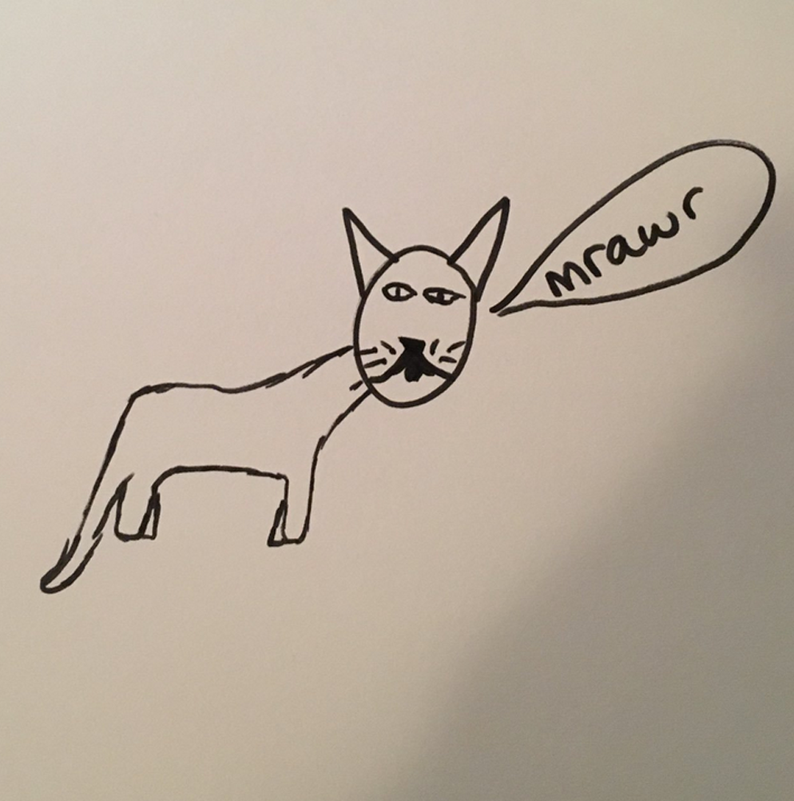
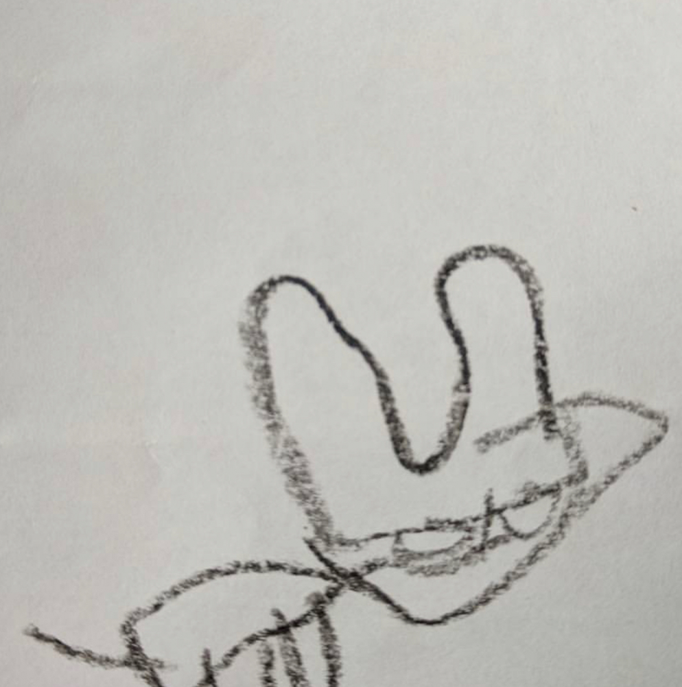
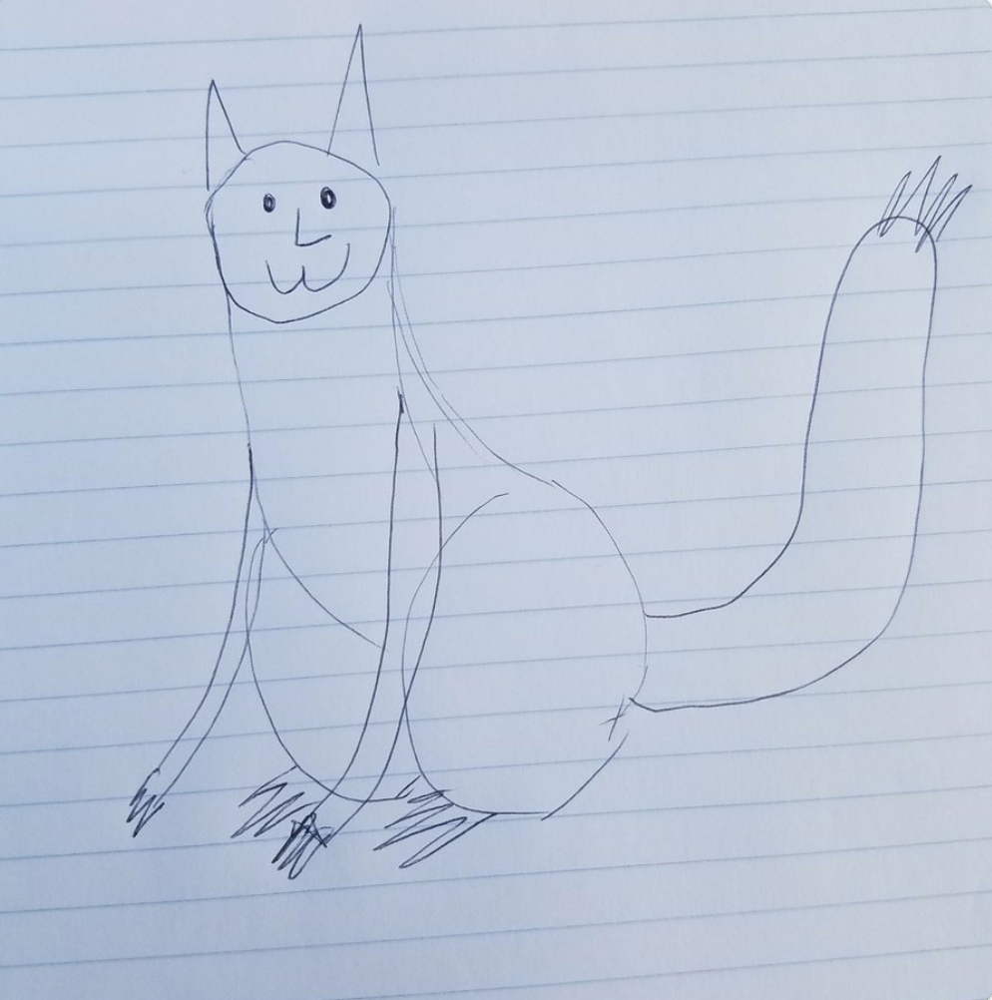

All artwork available for purchase. Check back weekly for new cats!
Kritty

Anna Spizzirri
Kritty, circa 2017
Marker on sketchpad
Kret

Shaylynn Piper
Kret, circa 2014
Colored pencil on printer paper
Kritet

Kristina Veraldi
Kritet, circa 2016
Pen on notebook paper